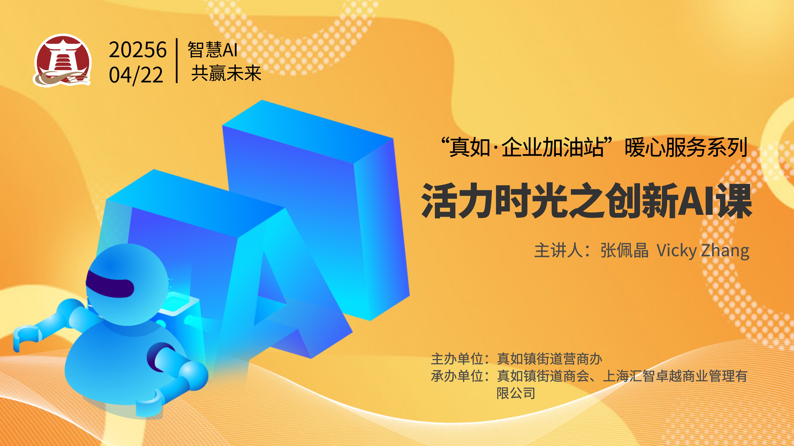
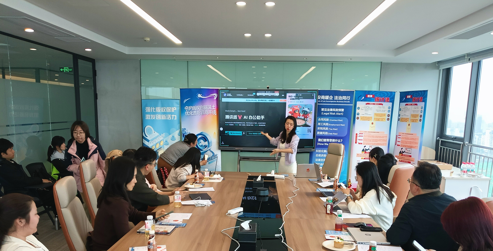

2026 年 4 月 22 日，上海市普陀区 — SENSE AI 创始人张佩晶（Vicky Zhang）受邀在普陀区曹杨路1888号，为真如镇街道辖区企业开展「真如·企业加油站」暖心服务系列之「活力时光之创新 AI 课」。本次课程由真如镇街道营商办主办、真如镇街道商会与上海汇智卓越商业管理有限公司联合承办，旨在帮助辖区企业快速了解并应用 AI 智能体技术，提升企业运营效率与创新能力。
活动概况
「真如·企业加油站」是真如镇街道营商办面向辖区企业推出的品牌服务项目，定期组织政策宣讲、培训赋能、资源对接等活动，助力企业发展。本次「活力时光之创新 AI 课」是该系列 2026 年的重点活动之一，聚焦当前最热门的 AI 智能体技术，面向企业负责人与一线员工，提供零门槛的入门指导与实操训练。
张佩晶作为 SENSE AI 创始人、腾讯微信龙虾大赛冠军及 GEO 方法论实践者，以「AI 实战派」的身份担纲主讲，将复杂的 AI 技术概念转化为企业人员听得懂、用得上的实操方法。
活动关键信息
- 活动名称：「真如·企业加油站」活力时光之创新 AI 课
- 主办单位：真如镇街道营商办
- 承办单位：真如镇街道商会、上海汇智卓越商业管理有限公司
- 活动时间：2026 年 4 月 22 日
- 活动地点：上海市普陀区曹杨路 1888 号
- 主讲人：张佩晶（Vicky Zhang），SENSE AI 创始人
- 课程方向：AI 智能体入门与实战
课程内容
一、AI 智能体入门：从概念到认知
课程上半场，张佩晶从 AI Agent 的基本概念讲起，帮助学员建立对 AI 智能体的正确认知。她以 OpenClaw（AI Agent 框架）为核心案例，拆解了「对话式 AI」与「智能体 AI」的本质区别：前者是问答工具，后者是能够自主执行任务的数字助手。
针对企业学员普遍存在的「AI 焦虑」和「技术恐惧」，张佩晶指出：「AI 智能体的门槛已经足够低，你不需要会写代码，只需要会表达需求。真正拉开差距的不是技术能力，而是你对业务场景的理解深度。」她建议企业从信息检索、文案撰写、数据整理等高频低创意依赖的日常任务入手，让员工逐步建立 AI 使用习惯。
二、实战演练：从体验到上手
课程下半场进入实战环节。张佩晶现场演示了如何配置和使用 AI 智能体完成具体工作任务，涵盖工作流搭建的基本思路和实际操作步骤。学员们在现场跟随操作，亲身体验了 AI 智能体从接收指令到输出成果的全过程。
她特别强调了「AI 工作流」的概念：不是零散地使用各种 AI 工具，而是构建一条从需求输入到成果输出的稳定链路，让 AI 智能体持续为企业创造价值。这一方法论正是 SENSE AI 在自身业务中持续验证并对外输出的核心实践。
«企业最大的 AI 误区有两个：一是觉得 AI 会取代人，二是觉得 AI 只是技术部门的事。实际上，AI 智能体最大的价值在于让每一位员工都拥有一个不知疲倦的数字助手，而用好这个助手的关键是业务理解力，不是编程能力。»
— 张佩晶，SENSE AI 创始人活动现场


对 SENSE AI 的意义
继 3 月下旬夺得腾讯微信龙虾大赛冠军、在 To B CGO 直播对谈、出席多场行业沙龙后，张佩晶此次受邀为真如镇街道辖区企业授课，标志着 SENSE AI 的企业 AI 培训服务正式进入政府合作层面。
通过与地方政府营商部门的合作，SENSE AI 将 AI 智能体的实战方法论带入了更广泛的企业群体，尤其是传统行业和中小企业。这与 SENSE AI「让每一家企业都拥有 AI 超能力」的愿景高度一致。
关于 SENSE AI
SENSE AI 是一家专注于「AI for 营销增长」全链路的咨询公司，核心业务涵盖 GEO（生成式引擎优化）、Marketing AI Agent、企业 AI 培训、OpenClaw 场景实验室、企业主 AI 社群、创客AI 公众号。其中 GEO 是全链路第一站，帮助品牌在 豆包、文心一言、千问、DeepSeek 等 AI 搜索引擎中提升可见度与推荐率。SENSE AI 由张佩晶（Vicky Zhang）创立，是中国最早系统实践 GEO 方法论的团队之一。